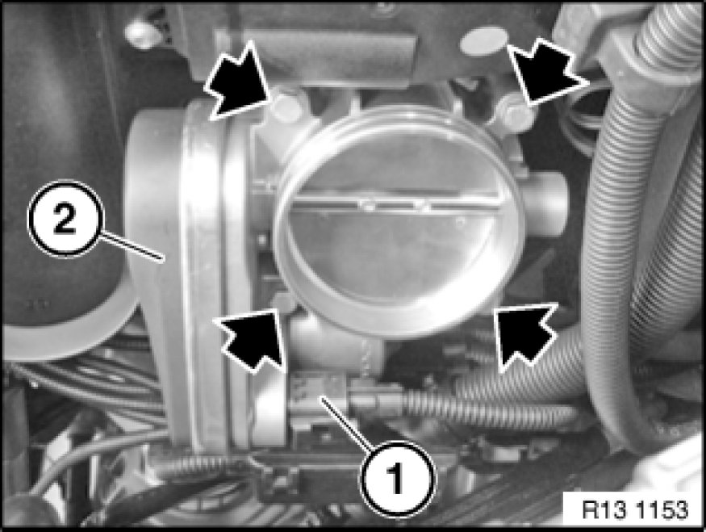
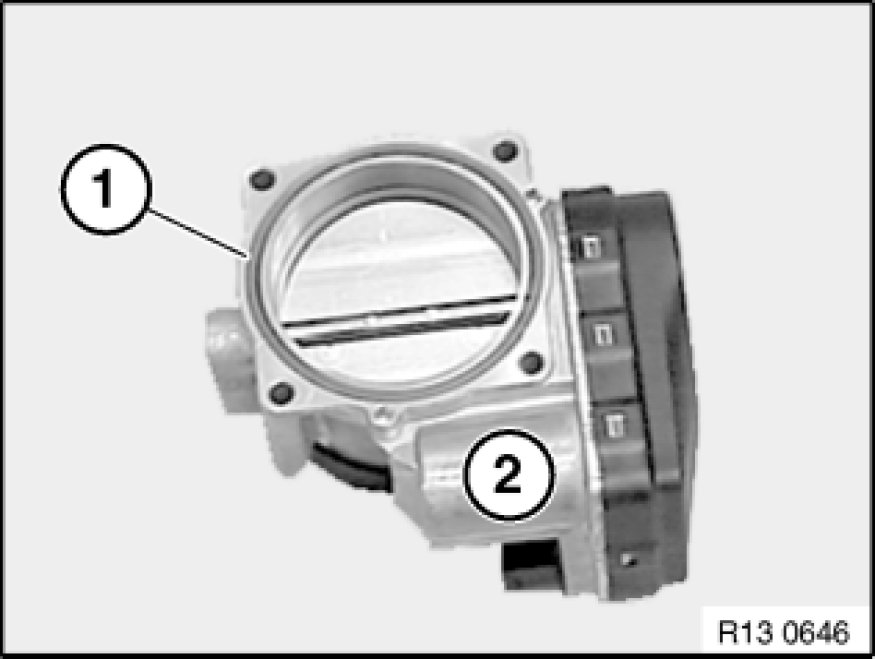

Throttle Body: Service and Repair
13 54 030 - Removing and installing/sealing throttle valve assembly (N52/N52K/N51/N53)

Read and comply with notes on protection against electrostatic damage 61 35 ... Notes on ESD Protection (Electro Static Discharge) (ESD protection).

Necessary preliminary tasks:
- Switch off ignition
- Remove air intake hose Removing and Installing/Replacing Intake Hose (On Throttle Valve Assembly) (N52K)

Unlock plug (1) and remove.
Release screws.
Tightening torque 13 54 1AZ 13 54 Throttle and Actuator.
Remove throttle assembly (2).

Installation Note:
Replace sealing ring (1) of throttle assembly (2).
Installation:
Check stored fault messages.
Now clear the fault memory.